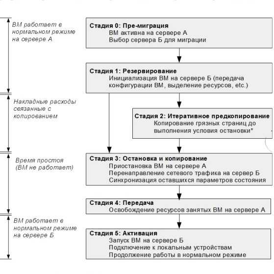
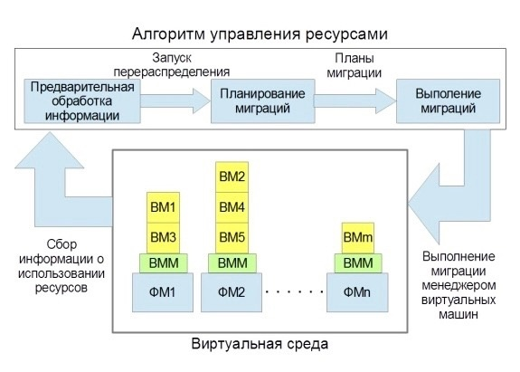
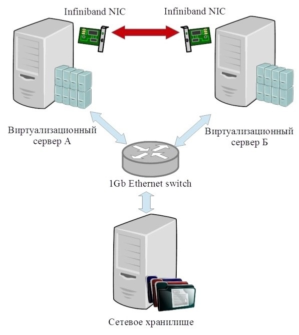
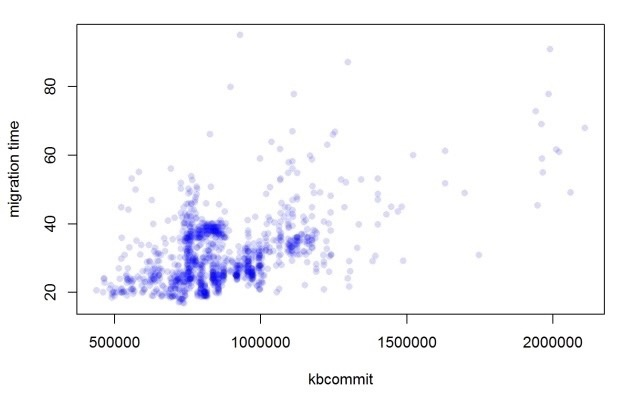

1. Введение
1.1. Облачные вычисления
1.2. Преимущества облачных вычислений
1.3. Живая миграция
1.3.1. Особенности живой миграции
2. Актуальность задачи
2.1. Проблема итеративного перераспределения
2.2. Существующие алгоритмы балансировки нагрузки
2.3. Существующие подходы к оценке времени миграции
3. Оценка времени миграции на основе линейной регрессионной модели 17
3.1. Постановка задачи
3.2. Методология эксперимента
3.2.1. Описание стенда
3.2.2. Выбор полезной нагрузки
3.3. Результаты
4. Выводы
Список литературы
Облачные вычисления — информационно-технологическая концепция, подразумевающая обеспечение повсеместного и удобного сетевого доступа по требованию к общему пулу конфигурируемых вычислительных ресурсов (например, сетям передачи данных, серверам, устройствам хранения данных, приложениям и сервисам — как вместе, так и по отдельности), которые могут быть оперативно предоставлены и освобождены с минимальными эксплуатационными затратами или обращениями к провайдеру [1].
Так же национальным институтом стандартов и технологий США даются определения терминов [1]:
Для того чтобы понять, как возникла задача балансировки ресурсов, рассмотрим три сценария, в которых облачный подход к вычислениям (utilitycomputing) предпочтительнее традиционного хостинга [2]. В первом случае востребованность сервиса сильно меняется со временем. Например, при традиционном подходе выделение ресурсов дата-центра, позволяющие справится с редкими (несколько дней в месяц) пиковыми нагрузками, приводит к неэффективному использованию ресурсов. В качестве альтернативы облачная модель позволяет организации проводить почасовую оплату вычислительных мощностей, что потенциально ведёт к снижению затрат, даже если аренда машины у поставщика облачных услуг превышает затраты на содержание собственной (почасовые затраты). Во втором рассматриваемом сценарии неизвестно, какое количество ресурсов будет необходимо. К примеру, веб-стартап будет нуждаться в технической поддержке ажиотажного спроса при резком росте популярности, но потенциально спрос на сервис может упасть, и тогда часть ресурсов можно будет освободить. Третий сценарий применим к компаниям, занимающимся ресурсоёмкими вычислениями (например, анализом крупных массивов данных), которые могут воспользоваться «ассоциативностью затрат» для ускорения обработки данных. Это возможно за счёт использования 1000 виртуальных машин в течении часа, вместо использования одной машины на протяжении 1000 часов. Таким образом облачные вычисления позволяют заказчикам распределить затраты на вычислительные ресурсы не равномерно, а в соответствии с реальной необходимостью этих ресурсов (Michael Armbrust, 2010) (например, использовав 100 машино-часов сегодня и ни одного завтра, платить только за 100).
Ещё одно достижение облачных вычислений – консолидация ресурсов. Для традиционных дата-центров оценки средней загруженности 6 колеблются между 5% и 20% [3, 4]. Это связано с тем, что пиковые непродолжительные нагрузки могут быть на порядок выше средней загруженности и ресурсы, предназначенные для работы при пиковых нагрузках, простаивают при обычных сценариях. Так как ввод в строй новых вычислительных мощностей при традиционных подходах может занимать от нескольких дней до нескольких недель (доставка оборудования, включение его в инфраструктуру, настройка), то использование таких подходов приводит либо к низкой эффективности использования ресурсов, либо к отказам системы при критических сценариях. Благодаря эластичности облачных систем становится возможно динамически распределять вычислительные мощности между сервисами, тем самым потенциально повысив среднюю эффективность серверов.
Для того чтобы предоставлять сервис такого рода, поставщики облаков должны иметь возможность быстро перераспределять нагрузку между физическими серверами. Для этого уже сейчас используют технологии виртуализации и живой миграции виртуальных машин.
При рассмотрении этапов миграции будет опираться на работу [5]
Рисунок 1: Основные этапы миграции.
Логические этапы миграции виртуального окружения представлены на Рисунок 1: Основные этапы миграции. Миграция как процесс транзакционного взаимодействия двух серверов включает:
0. Этап пре-миграции. На этом этапе выбирается принимающий сервер и проверяется, может ли он гарантировать достаточно ресурсов для переносимой ВМ.
1. Этап резервации. Создаётся запрос на миграцию ВМ с сервера А на сервер Б. Проходит проверка наличия достаточного количества ресурсов и резервирование их в соответствии с размерами ВМ.
2. Этап итеративного предкопирования. Во время первой итерации передаются все страницы памяти. На последующих итерациях передаются только те страницы, которые были загрязнены за время предыдущей итерации. Этот этап завершается при выполнении какого-либо из условий остановки, которые будут описаны подробнее ниже.
3. Этап остановки и копирования. Выполнение ВМ на сервере А приостанавливается, сетевой трафик перенаправляется от сервера А на сервер Б. После этого передаётся состояние виртуального ЦПУ и оставшиеся некогерентные страницы памяти. После этого этапа на серверах А и Б виртуальная машина находится в консистентном приостановленном состоянии.
4. Этап подтверждения. Сервер Б уведомляет А об успешном получении консистентного образа ВМ. Сервер А принимает это сообщение в качестве подтверждения успешного завершения транзакции миграции, после чего освобождает ресурсы, принадлежащие «оригинальной» ВМ.
5. Этап активации. Перемещённая ВМ активируется на сервере Б, происходит выполнение постмиграционных сценариев, которые подключают устройства в соответствии с конфигурацией и проводят необходимые манипуляции с сетью.
При таком подходе во время миграции хотя бы один из серверов будет содержать консистентный образ ВМ. Таким образом в случае отказа какого-либо рода во время миграции ВМ на новый сервер процесс миграции может быть отменён, а работа ВМ продолжена на локальном сервере.
В дальнейшем будем различать два временных промежутка. Длительность всех пяти этапов будем называть временем миграции, а суммарную длительность этапов 3 и 4 – временем простоя.
Во время живой миграции производительность системы страдает от накладных расходов на поддержание когерентности образа памяти ВМ [5]. Очевидно, что если исключить этап итеративного копирования, вся миграция пройдёт за время, пропорциональное размеру памяти. К сожалению, это приведёт к недоступности всех сервисов, которые предоставляет данная ВМ, на время миграции. В системах с требованием к доступности сервисов 99,999% времени (т.е. сервис может быть недоступен ~5 минут в год) применение такого подхода недопустимо (миграция ВМ с 8ГБ памяти будет приводить к простою сервисов порядка 2-х минут).
Более привлекательной становится альтернатива с использованием итеративного копирования памяти, во время которой образ памяти передаётся в то время, пока ВМ (а следовательно, и все предоставляемые ей сервисы) продолжает работать. Тем не менее, недостаток этого подхода в том, что за время передачи памяти некоторые страницы могут быть повторно модифицированы, как следствие, их нужно будет передать снова (в дальнейшем такие страницы будем называть грязными). Для большинства нагрузок существует небольшое множество часто изменяемых страниц, попытки передачи страниц из этого множества до остановки ВМ не принесут пользы. Фундаментальным вопросом миграции с итеративной передачей памяти является следующий вопрос: «Как определить, что нужно завершить этап передачи данных из-за того, что было потрачено слишком много времени и ресурсов?» Если ВМ за время миграции не модифицирует ни одной страницы памяти, то достаточно будет одной итерации предкопирования. В то же время, если ВМ будет загрязнять память быстрее, чем она будет переносится, то очевидно, что вся идея предкопирования окажется бессмысленной, и нужно перейти к этапу «остановки и копирования».
Наиболее вероятные нагрузки лежат где-то между этими двумя крайностями: определённое (возможно большое) множество страниц будет изменяться редко или практически никогда, а следовательно, это лучший кандидат для предкопирования, в тоже время оставшееся множество страниц (рабочий набор) следует передавать на стадии остановки и копирования.
В рассматриваемых платформах используются следующие условия остановки (проверяются после выполнения итерации):
Таким образом живая миграция является технологией, которая позволяет обеспечивать быстрое и прозрачное для пользовательских систем перераспределение, но для балансировки нагрузки на серверы при пере- или недозагружености необходимо принять решение о том, с каких серверов, какие ВМ и куда нужно перенести.
Широкое распространение облачных вычислений [6, 7] предъявляет все большие требования к качеству предоставляемых услуг. Как отмечалось ранее [1, 2] облачные вычисления подразумевают эластичное предоставление ресурсов. Для обеспечения эластичности необходим эффективный менеджмент ресурсов, который невозможен без оценки времени миграции. Дело в том, что когда менеджер ресурсов обнаруживает ситуацию нехватки ресурсов на одном из серверов, он должен:
Такая последовательность исключает лишние миграции, могущие снизить общую производительность системы. Таким образом, оценка времени миграции является подзадачей важнейшей современной проблемы распределения ресурсов в облаке.
Проблема размещения виртуальных машин начинается с определения того, как машины уже были распределены на физических хостах, и любой алгоритм, который решает данную проблему, должен генерировать решения в соответствии с уже данным распределением. Такие решения - списки последовательных и параллельных миграций, которые должны быть выполнены для перевода дата-центра из текущего состояния в желаемое. Все исполняемые живые миграции, все промежуточные состояния должны удовлетворять по крайней мере подмножеству поставленных ограничений; некоторые ограничения, в то же время, могут быть ослаблены на время данного перехода. Например, если виртуализационное программное обеспечение поддерживает oversubscribing оперативной памяти, может быть позволено превысить физическую память хоста на время миграций, даже если политика датацентра в общем случае этого не позволяет. Также бывает необходимо иметь промежуточное состояние хуже, чем изначальное, для достижения лучшего конечного состояния. Внешние условия также могут приводить к ослаблению ограничений: например, пожар или неполадки с системой охлаждения делают допустимым определенный уровень перегрузки, в общем случае недозволенный. Виртуальные машины и физические хосты могут быть добавлены или убраны из дата-центра, загрузки по ресурсам могут различаться, так что качество любого размещения виртуальных машин может ухудшаться со временем и должно оцениваться заново каждый раз, когда подобное происходит. Задачу оценки изначальной конфигурации дата-центра и генерации списка живых миграций, улучшающих качество размещения виртуальных машин, называют проблемой итеративного перераспределения [8].
Для решения задачи итеративного перераспределения алгоритмы балансировки нагрузки в общем случае имеют логическое строение, представленное на Рисунок 2.
Рисунок 2: Обобщённая архитектура менеджера ресурсов.
Алгоритм можно условно разделить на следующие этапы:
Все дальнейшие решения данный алгоритм принимает на основании значения данного параметра для каждой ВМ.
Таким образом ни один из опубликованных алгоритмов не учитывает время миграции каждой ВМ в явном виде, а некоторые [11, 12] основаны на предположении что время миграции одинаково и пренебрежимо мало. Использование информации о времени миграции потенциально может улучшить результат перераспределения нагрузки в при подкритических ситуациях. Так же в одном из алгоритмов [12] в качестве горизонта предсказания было предложено использовать 15 минут. С увеличением горизонта предсказания точность самого предсказания падает, поэтому естественно стремится к его уменьшению. Таким образом возникает проблема оценки времени миграции.
На данный момент существует несколько моделей предсказания времени миграции[5, 10, 15]. Одна из таких моделей, предложена Сериф Акоуш и Рипдуман Сохан [14]
Данная модель делает вывод о времени миграции на основании скорости загрязнения страниц, пропускной способности канала, размера передаваемой виртуальной машины и информации о накладных расходах в используемом алгоритме миграции. По своей сути предложенная в статье модель - симуляция миграции, в ходе которой на основе информации о скорости генерируется битовая карта грязных страниц. Данный подход позволил получить высокую точность предсказания времени миграции (ошибка колеблется от 1,5% до 9,5% в зависимости от нагрузки). В то же время получение такого параметра как скорость загрязнения страниц связано с большими накладными расходами и тесной интеграцией с виртуализационной платформой.
Так же были попытки оценки времени миграции с использованием статистического аппарата, предпринятые Ву и Чао [15]. Были получены зависимости от суммарного использования процессора на сервере, при разной интенсивности операций с памятью. Но в итоговой модели нет зависимости от нагрузки на память, а характер зависимости времени миграции от загруженности процессора меняется значительно.
В своей работе, Гунджан Ханна с соавторами [10] в рамках метрики оценки загруженности машины рассматривают величину очень близкую к времени миграции, а именно затраты на миграцию. В своей оценке авторы делают предположение о линейной зависимости использования оперативной памяти и процессора. К сожалению методика получения коэффициентов для этой модели не приводится.
Существующие решения задачи автоматической балансировки нагрузки в облаке на данный момент не учитывают время миграции гостевых ВМ [10, 11, 12, 13], что может привести не только к получению неоптимального решения задачи, но и к серьёзному ухудшению качества работы системы (из-за резкого роста накладных расходов на серверах, вовлечённых в процесс миграции). Таким образом проблема оценки времени миграции актуальна
В существующих работах [14] было показано, что наиболее значимыми параметрами при оценке времени миграции является ширина канала передачи данных и скорость загрязнения страниц памяти. Со скоростью передачи данных всё относительно легко, т.к. она может быть измерена быстро и с минимальными накладными расходами, более того, большинство поставщиков облачных платформ советуют использовать для миграции отдельную сеть. Измерение второго параметра сопряжено с высокими накладными расходами (выход в гипервизор и перевод всей памяти гостевой ВМ в режим «только чтение»), более того, этот параметр в реальных сценариях быстро меняется, и для получения удовлетворительных данных необходимо усреднение по времени, сравнимым с временем миграции. Следует отметить, что в сентябре 2014 года фирма Intel® выпустила новое поколение процессоров Xeon® E5- 2600 v3, в которых появилась возможность проверки A/Dbit’a для гостевой памяти[16], что снизит накладные расходы на измерения скорости загрязнения памяти, но, тем не менее, проблема усреднения остаётся открытой, равно как проблема в целом для аппаратных платформ предыдущих поколений.
В данной работе предлагается способ нахождения зависимости времени миграции от доступных метрик эмпирическим путём, используя статистические модели.
В качестве объектов исследования были выбраны платформа: ParallelsCloudServer. Время миграции было отождествлено с временем выполнения команд для миграции ВМ. В соответствие каждой миграции были поставлены вывод команды sar с опциями «выводить всё». Таким образом мы получаем максимально полную, быстро доступную статистику по используемым системой ресурсам, не создавая больших накладных расходов. Целью эксперимента был поиск коррелирующих со временем миграции признаков, входящих в системные статистики, а также оценка характера зависимости от таких признаков. Кроме внутренних факторов (степень и характер загруженности гостевой системы) в модель был включён внешний фактор: скорость передачи данными между серверами А и Б.
В рамках данной работы была выбрана линейная регрессионная модель для поиска влияющих на время миграции параметров и для количественного описания найденного влияния.
Конфигурация стенда для проведения экспериментов приведена на Рисунок 3.
Рисунок 3: Схема экспериментальной установки.
В стенде были использованы три сервера - каждый с процессором Intel® Core™ i7-920, 4GBDDR3 RAM, сетевой картой 1 GigabitEthernet и сетевым коммутатором D-Link. Дополнительно в виртуализационных серверах были установлены сетевые карты Infiniband.
На серверах А и Б была установлена платформа ParallelsCloudServer 6.0.8, сетевое хранилище основано на дистрибутиве CentOS 7.1.1503 и пакете linux-nfs.
Предлагаемая модель предсказания времени миграции во многом
зависит от разнообразия собранных статистических данных. В связи с
этим были использованы девять типов нагрузок: синтетическая нагрузка,
загрязняющая память с постоянной скоростью, и восемь нагрузок из
пакета SPECjvm. Использованная синтетическая нагрузка сходна с
таковой из предыдущих исследований [14]. Особенность этой
синтетической нагрузки заключается в том, что она моделирует
практически не встречающуюся в жизни ситуацию, когда процесс с
постоянной скоростью перезаписывает один и тот же объём памяти. При
таком сценарии происходит довольно мало итераций миграции, а время простоя определяется объёмом памяти, с которым работает нагрузка.
В ходе проведённых исследований было необходимо
удостовериться, что выбранная модель даёт удовлетворительные
результаты при работе с распространёнными нагрузками. В качестве
таковых были выбраны нагрузки из системы оценки SPECjvm. Данный
набор нагрузок состоит из приложений, решающих распространённые
задачи, в то же время интенсивно используется не только процессорное
время, но и оперативная память, что приводит к различному времени
миграции виртуальной среды.
Было проведено более тысячи экспериментов по миграции ВМ при различных нагрузках. На Рисунок 4 и Рисунке Рисунок 5 приведены графики распределения времени миграции от использования процессора и оперативной памяти, так как именно эти параметры оказывают статистически значимое влияние.
Рисунок 4: График зависимости времени миграции от использования процессора
Рисунок 5: Зависимость времени миграции от использованной оперативной памяти.
В результате итеративного добавления статистически значимых
параметров к проверяемой модели был получен следующий вид
зависимости:
Время миграции ~ 1 + 𝐶𝑃𝑈.𝑎𝑙𝑙..𝑖𝑑𝑙𝑒 + 𝑘𝑏𝑐𝑜𝑚𝑚𝑖
В данной формуле фиксируется зависимость от параметров:
Таблица 1: Результаты построения регрессионной модели.
Построенная модель обладает коэффициентом детерминации 0,5375, что позволяет признать её приемлемой.
В работе была показана состоятельность оценки времени миграции как линейная регрессионная модель от параметров характеризующих суммарный простой процессоров и необходимый для работы объём памяти. Кроме того, была сформулирована проблема оценки времени миграции и проведен детальный анализ существующих решений. Хотелось бы подчеркнуть, что при всей значимости данной оценки многие из академических исследований распределения ресурсов склонны ее игнорировать, что делает самую красивую модель неприменимой на практике. Достоинством этого подхода являются низкие накладные расходы в сравнении с предложенным в предыдущих работах [14]. Данная модель может применяться в случаях, когда важны скорость получения оценки и/или минимизация влияния на работоспособность виртуального окружения.